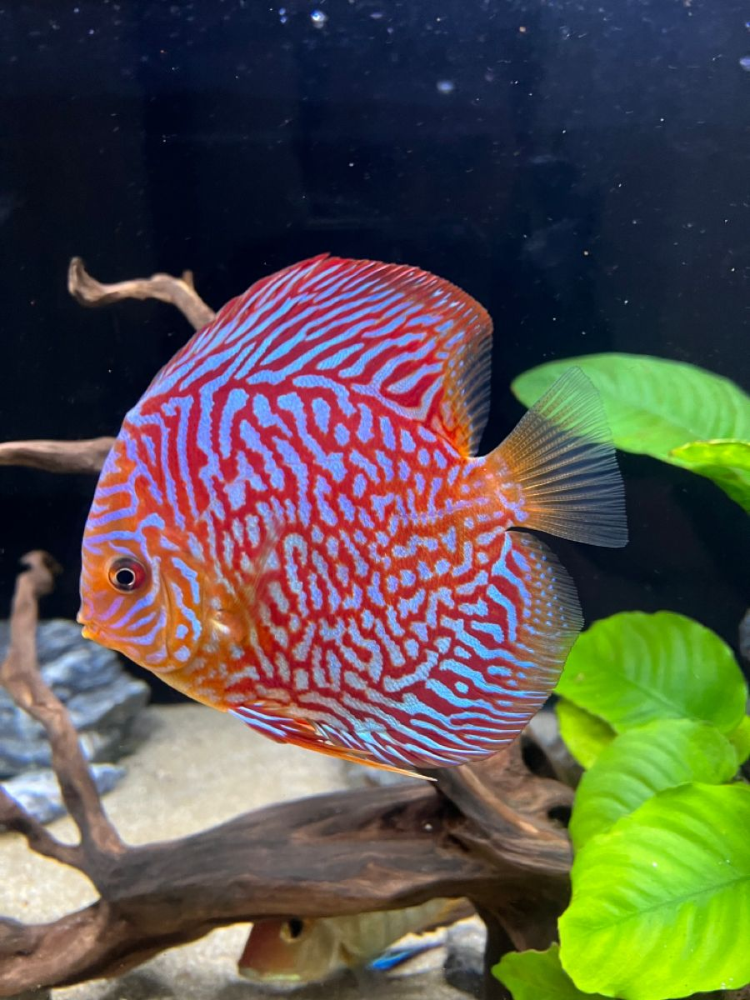

Discus balığı (Symphysodon), akvaryum dünyasının en zarif ve göz alıcı türlerinden biridir. Güney Amerika’nın Amazon Nehri havzasında doğal olarak yaşayan bu balık, yuvarlak ve yassı vücut yapısıyla dikkat çeker ve ortalama 15–20 cm uzunluğa kadar büyüyebilir. Renk çeşitliliği oldukça fazladır; mavi, kırmızı, yeşil ve sarı tonlarıyla akvaryumlarda görsel bir şölen sunar.
Sakin ve sosyal yapıları sayesinde sürü halinde yaşamayı tercih ederler ve diğer barışçıl türlerle uyum içinde bulunabilirler. Hassas yapıları nedeniyle deneyimli akvaryum severler için uygun olan Discus balıkları, 26–30°C sıcaklıkta ve hafif asidik (pH 5.5–6.5) sularda sağlıklı şekilde gelişir. Protein açısından zengin yemlerle beslenmeleri gerekir; canlı yemler ve kaliteli granül yemler renklerinin canlı kalmasına yardımcı olur. Üreme döneminde eş seçerek yumurtalarını düz yüzeylere bırakır ve yavrularına özenle bakan nadir türlerden biri olarak akvaryum hobisinde özel bir yere sahiptir.